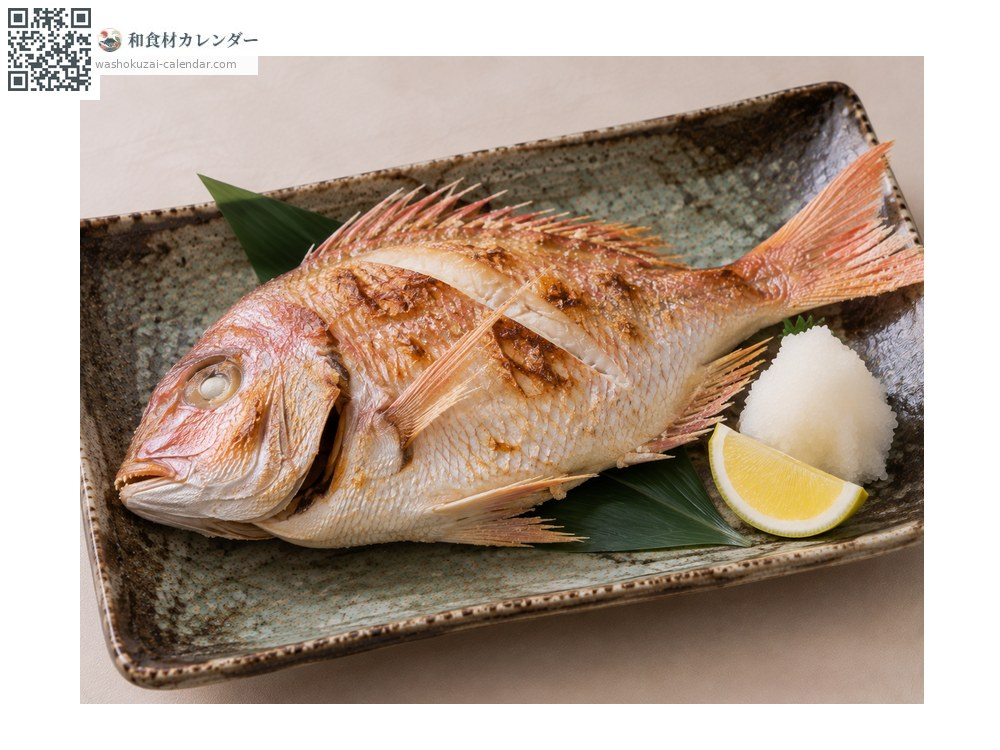
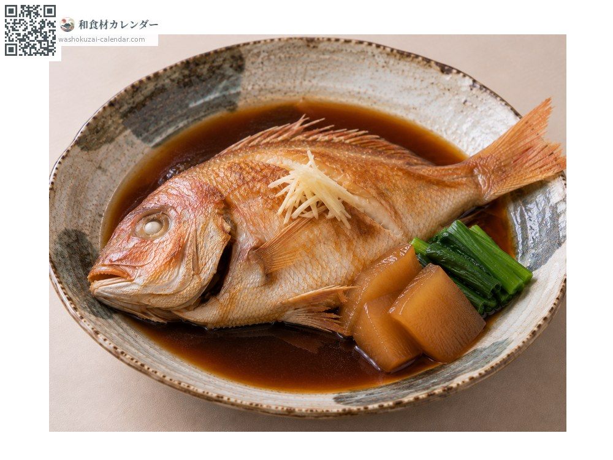
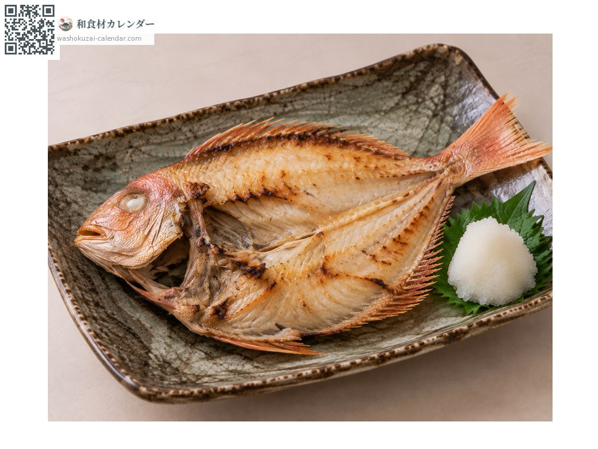
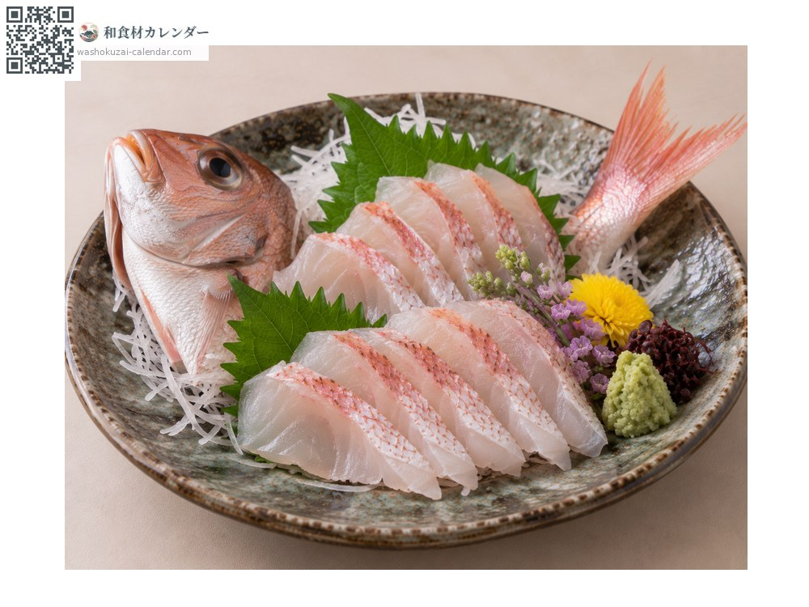

Seafood
Yellowback seabream
レンコダイ れんこだい renkodai
Also known asrenkodai, kidai
At its best in Sep, Oct, Nov

When it is at its best
Jan
Feb
Mar
Apr
May
Jun
Jul
Aug
Sep
Oct
Nov
Dec
In seasonAvailable
How to cook

Shioyaki (salt-grilled)
Small enough to grill whole. The skin turns fragrant.

Nitsuke (simmered in sweet soy)
Simmered in sweet soy. The bones give a good broth.

Dried overnight
Butterflied and dried overnight, which deepens the flavour.

Sashimi
Good raw when fresh. Leaner and more delicate than red sea bream.
How to choose
A vivid pink body with clear eyes and a firm feel.
Storage
Gut and refrigerate. Use within two days.
Main areas
Good to know
Its formal name is kidai. Smaller and cheaper than red sea bream, but good eating. Because several are caught together, the Japanese name is written with characters meaning linked sea bream, like the chambers of a lotus root.